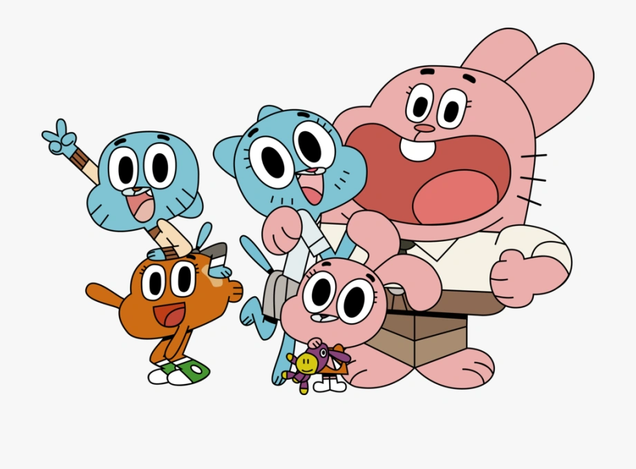

About Gumball
The Amazing World of Gumball follows the misadventures of Gumball, 12-year-old cat. With help from best friend Darwin, his former pet goldfish that grew legs and joined the family, he gets into all sorts of antics. He is joined by his sister Anais, a four-year-old bunny with heightened intelligence.
Gumball's family: The Watersons
Gumball's characteristics
- He's a 12 year-old blue cat
- He attends Elmore Junior High School
- He's the eldest child who rarely sets a good example for his younger sister as he's always getting in trouble
Gumball's friends
Gumball's best friend is his talking pet goldfish, Darwin. His other friends include a talking banana called Joe and a ghost called Carrie. Also he's in love with a talking peanut named Penny. Click on the links below to read more about them.